从普林斯顿小镇乘火车到纽约市大约只需要一个小时，该镇看上去就像美国东北部的一个普通的市郊小镇。被科学界称为“研究所”的普林斯顿高等研究院，就坐落在普林斯顿镇的郊区。研究所周围风景如画，一群鸭子在小池塘中游弋，树木倒映在平静的水面上，显得十分宁静幽远。研究所旁边的建筑，都是两三层的砖砌小楼，保留着20世纪50年代的建筑风格，但却隐隐反映出研究所强大的学术能力。那安静的走廊，还有研究所的主图书馆，都曾经有爱因斯坦等科学巨匠的身影。在这样的环境中徜徉，人们会情不自禁地去感叹研究所的悠久历史。
2004年3月，我们的会议就在这里召开。邀请函是2003年12月份发出的，尽管时间比较仓促，但是参会者的反应却十分热烈，大约有20人出席了这次会议。会议开始后，我请大家轮流做自我介绍。威滕、朗兰兹和彼得·戈达德，就坐在我旁边，这让我备感压力。此外，出席会议的还有他们三人各自所在的数学与自然科学圈子中的几名同事。分别与蒙托宁以及戈达德和努特斯合著过论文的戴维·奥利弗也到会了，自然，这次会议绝对少不了本·曼恩。
我们按照计划有条不紊地开展各项活动，会议的核心内容就是探索本书介绍的那些问题：朗兰兹纲领与数论及调和分析的渊源，以及由朗兰兹关系向有限域平面上的曲线、黎曼曲面的推广。我们还花了一些时间来解释贝林森–德林费尔德构架、我和费金合作开展的卡茨–穆迪代数研究，以及卡茨–穆迪代数与二维量子场论之间的联系。
与一般的研讨会不同，我们这次安排了大量的讨论、交流时间。会议的效率很高，参会者讨论得如火如荼，甚至连来去自助餐厅的路上也没有停止交流。
威滕从始至终都非常积极，他坐在前排认真倾听，不时提出一些问题，还不断与发言人进行深入交流。会议第三天的上午，他告诉我：“我对我们研究的这个问题有了一个新想法，下午就由我来发言吧。”
在发言中，威滕概述了两个学科之间可能存在的某种联系。这次发言是一个新理论的雏形，目的是架设一座连接数学与物理学的桥梁，这也是他自己、他的研究合作伙伴以及无数其他人一直苦苦求索的目标。
我们在前面讨论过，在安德烈·韦伊“罗塞塔石碑”的右侧轨道上，人们围绕黎曼曲面为朗兰兹纲领构建几何表现形式。所有的黎曼曲面都是二维的，例如，我们在第10章讨论的球面（最简单的黎曼曲面）有两个坐标数字：纬度和经度，因此球面是二维的。其他黎曼曲面也都是二维的，因为曲面上所有点的极小邻域都像一小块二维平面，可以用两个独立的坐标数字来描述该曲面。
与此同时，人们发现规范场论具有电磁对偶性。然而，规范场论面对的是四维空间。为了在规范场论与黎曼曲面之间建立某种联系，威滕准备用“降维”的方法，将四维规范场论变成二维规范场论。
“降维”实际上是物理学领域中的标准工具：对于某个已知的物理模型，仅关注某些自由度，而不考虑其他自由度，以建立起近似的简单模型。例如，假设我们在一架处于飞行状态的飞机上，站在过道上的乘务员递给你一杯水。为简单起见，我们假设乘务员的手的运动方向与飞机的飞行方向垂直。那么，杯子的运动速度就由两个部分构成：首先是飞机的飞行速度，其次是乘务员把水递给你的时候手的运动速度。不过，前者远比后者大，因此，如果我们从地面上一个静止观察者的角度来描述杯子在空中的运动状态，那么我们完全可以忽略杯子运动速度中的第二个组成部分，认为杯子的运动速度与飞机的飞行速度完全相同。由于该速度是由两个部分构成的，因此这是一个二维问题。但是通过上述方法，我们可以把这个二维问题简化成只研究其主要构成部分的一维问题。
对于我们要研究的关系问题，为了降维，我们考虑用两个黎曼曲面的乘积生成一个几何图形（即流形）。在这里，“乘积”是指新几何图形的坐标数字由原有的两个黎曼曲面的坐标数字结合形成。
我们举个简单的例子。每条直线都有一个坐标数字，两条直线的乘积会生成两个独立的坐标数字。由此我们得到一个平面，该平面上的每个点都可以用两个坐标数字来表示，这些坐标数字都是由这两条直线的坐标数字结合而成的。
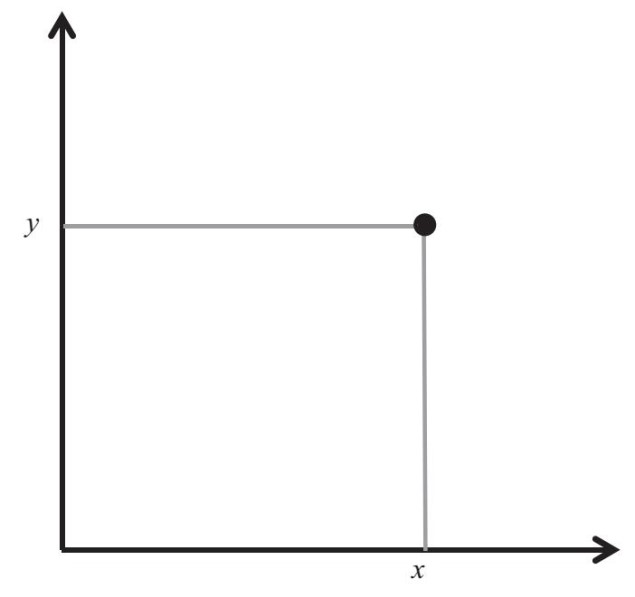
同理，一条直线与一个圆的乘积是一个柱面。柱面有两个坐标数字，一个是圆的坐标数字，另一个是直线的坐标数字。
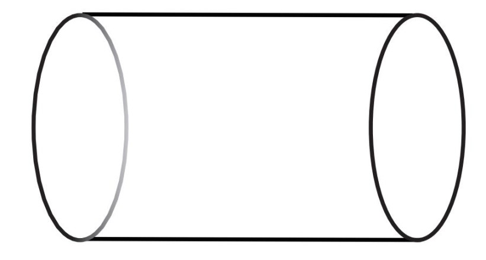
我们在计算乘积时，维数增加。在上述两个例子中，两个原有的对象都是一维的，其乘积是二维的。再比如，一条直线与一个平面的乘积是三维的，即3=1+2。
同理，两个黎曼曲面的乘积的维数是4，即4=2+2。我们可以画出黎曼曲面（前面已经讨论过），但是我们无法画出四维流形，因此，我们只能用数学方法来研究这个四维流形。而且，由于较低维数的几何图形更容易想象，所以在研究四维流形时，我们采用了类似的方法。这个例子充分说明了数学抽象思维的强大作用，再一次验证了我们在第10章中讨论过的相关内容。
现在，我们假设在这两个黎曼曲面中，其中一个黎曼曲面（我们记作X）的尺寸远小于另一个（记作Σ）。此时，有效自由度主要集中在Σ上，因此，我们可以借助Σ上的理论[物理学家称之为“有效理论”（effective theory），在本例中是一个二维理论]，来近似描述基于这两个曲面乘积所产生的四维理论。如果在保持其形状不变的前提下，我们把X逐渐缩小（注意，该有效理论取决于X的形状），这种近似程度就会越来越高。于是，我们就从研究X和Σ的乘积所得到的四维超对称规范场论，过渡到研究由Σ限定的一个二维理论之上。
在深入讨论该二维理论的性质之前，我们先了解量子场论的一般定义。在电磁理论中，我们研究三维空间中的电场与磁场。数学家把电场和磁场称作向量场，我们可以用风的特性来类比向量场：在三维空间的每个点上，风都有方向和强度，这个特性可以用带箭头的线段表示。带箭头的线段在数学上被称作向量，空间中所有向量的集合就是向量场。我们都见过气象图上表示风的向量场。
同样，给定磁场在空间中的每个点的位置也有具体的方向与强度，因此，磁场也是一个向量场。换句话说，我们可以依据某种规则，用向量为三维空间中的每个点赋值。数学家为这种规则起了一个很贴切的名字，即由三维空间到三维向量空间的“映射”（map）。如果我们跟踪给定磁场随时间变化的情况，就会得到由四维空间至三维向量空间的映射。（这好比电视上的气象图随时间变化而变化的过程。）同理，任意给定的随时间而变化的电场，也可以表示成由四维空间到三维向量空间的映射。电磁理论就是描述这两个映射的数学理论。
在经典电磁理论中，我们表示仅对与麦克斯韦方程式的根相对应的那些映射感兴趣。而在讨论量子理论时情况则不同。在量子理论中，我们研究所有映射。事实上，量子理论中的所有计算都涉及所有可能的映射之和，不过，所有的映射都经过加权，即与规定的因子相乘。在这些规定因子的作用下，与麦克斯韦方程式的根相对应的映射发挥主要作用，其他映射也会发挥一些作用。
从时空到各种向量空间的映射还出现在很多其他量子场论中（如非可换规范场论）。不过，并非所有量子场论都依赖向量。在“西格玛模型”（sigma model）这种量子场论中，我们考虑由时空至弯曲几何图形（即流形）的映射。该流形叫作“目标流形”（target manifold），例如，球形就可以充当目标流形。尽管人们最先在四维空间中研究西格玛模型，但是，即使我们把时空看成任意维数的流形，该模型仍然有意义。因此，对于任意目标流形和任意维数流形，都存在一个西格玛模型。例如，我们选择一个二维黎曼曲面来取代时空，把李群SO(3)作为目标流形，那么其对应的西格玛模型将描述由该黎曼曲面至群SO(3)的映射。
如下图所示，左边是一个黎曼曲面，右边是目标流形，箭头代表两者之间的映射，即利用目标流形中的点为黎曼曲面上的各个点赋值的规则。
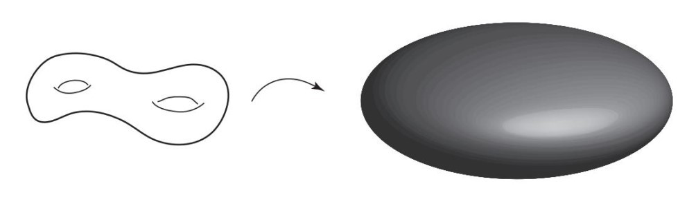
在经典西格玛模型中，我们所考虑的由时空至目标流形的映射能给出运动方程式的解（运动方程式与麦克斯韦方程式类似），这样的映射叫作“调和映射”。在量子西格玛模型中计算所有感兴趣的量（如相关函数）时，都会先为所有映射加权（即乘以规定因子），然后再求和。
* * *
接下来，我们继续讨论需要解决的问题：我们将X缩小到非常小，且对由Σ×X得到的规范群为G的四维超对称规范场论进行降维操作，在这种情况下，哪种二维量子场论可以被用来实现这种降维操作呢？研究发现，这种量子场论是西格玛模型的超对称扩展结构；由Σ至特定目标流形M映射而成，特定目标流形M则由黎曼曲面X与原规范场论的规范群G确定。因此，为了反映出这个特点，我们将它记作M(X，G)。
物理学家在好不容易建立了这些流形的概念之后，却发现数学家早已完成了这些工作，类似情况在群论研究中也出现过（详见第2章）。事实上，这些流形有一个名称——“希钦模空间”，是以英国数学家奈杰尔·希钦（Nigel Hitchin）的名字命名的。希钦是牛津大学的教授，他在20世纪80年代将这些空间的概念引入数学领域并进行研究。我们在对四维规范场论进行降维操作时需要使用这些空间的概念，因此，物理学家对这些空间感兴趣的原因是显而易见的。但是，数学家竟然也对它们感兴趣，个中原因我们似乎看不出来。
幸好，奈杰尔·希钦详细地记录了他发现这些空间的具体过程。事实上，这个例子也充分说明了数学与物理学之间存在微妙的关联。20世纪70年代末，希钦与另外两位数学家迈克尔·阿蒂亚（Michael Atiyah）及尤里·曼宁，对所谓的“瞬子方程”（instanton equation）进行了研究。瞬子方程式是物理学家在研究规范场论时，在四维平坦空间中建立的。希钦随后研究了三维平坦空间中的微分方程式，这些微分方程式被称作“单极方程式”（monopole equation），是通过将四维瞬子方程式降为三维得到的。从物理学的角度看，这些单极方程式有很大的研究价值，人们还发现，它们竟然拥有迷人的数学结构。
之后，人们又更进一步，研究将四维瞬子方程式降为二维后得到的那些微分方程式。可惜的是，物理学家发现这些方程式在二维空间（即平面）中没有“非凡根”（non-trivial solution），于是他们就放弃了这方面的研究。但是，希钦的研究却有新发现：在任意弯曲的黎曼曲面（如甜甜圈或椒盐卷饼的表面）上可以建立这些方程式。物理学家之所以与这个重要成果擦肩而过，是因为在当时（20世纪80年代初）物理学家对这种弯曲表面上的量子场论并无特别的兴趣。但是，希钦却通过数学方法发现，在这些表面上二维方程式的根十分丰富。因此，他引入了模空间M(X，G)，作为这些微分方程式的根在黎曼曲面X上的驻留空间（在本例中，即规范群G的驻留空间）。他发现，黎曼曲面是一种值得关注的流形，而且它拥有“超凯勒度量”（hyper-Kähler metric）。（当时，人们找到的超凯勒度量的实例并不多。）接着，其他数学家蜂拥而上，沿着希钦确定的方向开展了大量研究。
大约10年后，物理学家开始注意到这些流形在量子物理学中的重要意义，尽管在威滕与其合作者完成我介绍的这项成果之前，物理学家们在这一方面的研究成果并没有引起很大的反响。（希钦的模空间最初出现在安德烈·韦伊“罗塞塔石碑”右侧轨道中，但在不久前，人们发现，在黎曼曲面被有限域平面上的曲线所替换的中间轨道中，模空间也有某些应用，这同样值得我们关注。）
数学与物理学的相互作用是一种双向过程，两个学科相互启发、相得益彰。有时候，其中一个学科在研究某个概念时会取得领先优势，最终却促使另一个学科的研究焦点发生转移。总的来看，两个学科之间的相互作用是一种良性循环。
* * *
现在，我们已经对数学家与物理学家的一些深刻独到的见解有所了解，接下来，我们把电磁对偶性应用到规范群为G的四维规范场论之中，就会得到规范群为LG（即G的朗兰兹对偶群）的规范场论（注意，如果我们再次应用电磁对偶性，就会得到最初的群G。换言之，LG的朗兰兹对偶群是G），Σ上与群G及LG相关的有效二维西格玛模型也将彼此相等或对偶。对于西格玛模型而言，这种对偶性叫作“镜像对称”（mirror symmetry）。在其中一个西格玛模型中，我们考虑由Σ至与群G相对应的希钦模空间M(X，G)的映射。在另一个西格玛模型中，我们考虑由Σ至与群LG相对应的希钦模空间M(X，LG)的映射。这两个希钦模空间以及它们的西格玛模型，彼此之间并不存在任何先验关系，但它们竟然可以形成镜像对称，这就像四维规范场论具有电磁对偶性一样令人吃惊。
物理学家之所以对这种二维西格玛模型感兴趣，部分原因是这些西格玛模型在弦论中可以发挥重要作用。弦论认为自然界的基本对象不是点状基本粒子（没有内部几何结构，维数为零），而是纵向延伸的一维对象，即弦。这些弦要么是开弦，有两个端点，要么是闭弦，构成小圈，就像我们在第10章里讨论的那些圈一样。
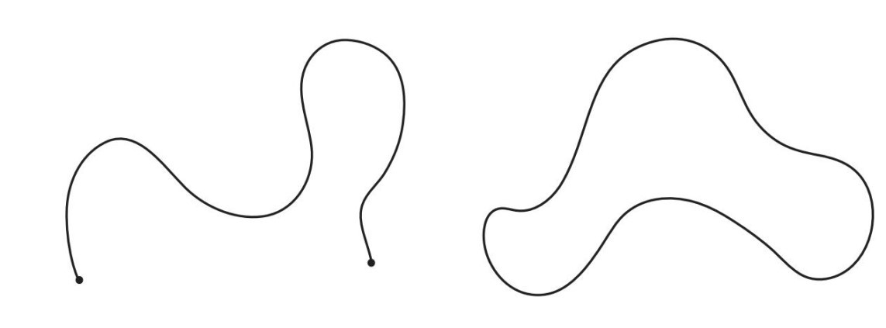
弦论还认为，当这些微小的弦在时空中运动时，其自身的振动会形成基本粒子及基本粒子间的相互作用力。
只要我们考虑弦的运动，就会用到西格玛模型。在标准物理学中，点状粒子在空间中的运动轨迹是一维的，该粒子在不同时间点的位置可通过该运动轨迹上的点来表示。
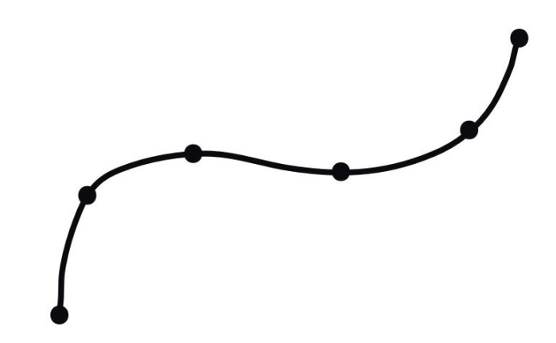
而闭弦在运动时，则会掠过一个二维曲面。因此，该弦在某个时间点的位置是由该曲面上的圈表示的。
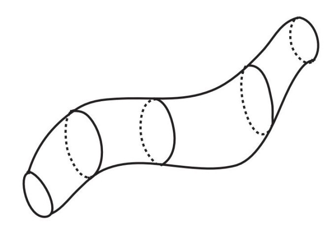
一条弦可以“分裂”成两个或多个部分，这些部分还可以结合到一起，如下图所示。由此我们得到更具一般性的黎曼曲面，其“孔洞”数目可为任意值，并且边界面呈环形，这就是弦的“世界面”（worldsheet）。
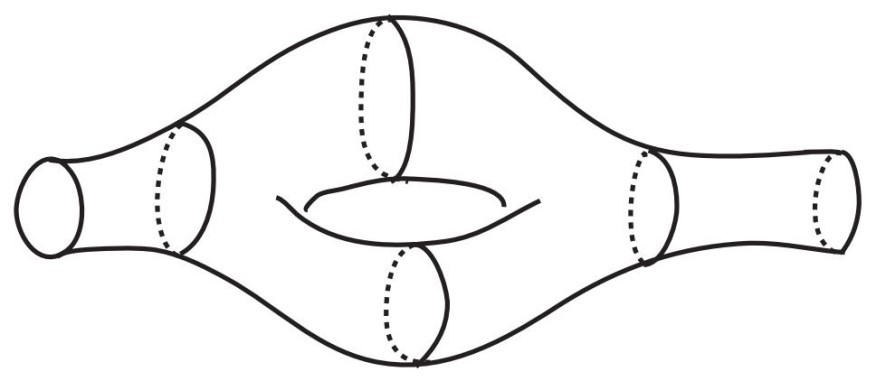
这样的运动轨迹可以用嵌入时空S的黎曼曲面Σ表示，也可以表示成由Σ至S的映射，而且这些映射正好是曲面Σ上的西格玛模型中目标流形为S的映射。不过，这是一种颠倒的映射关系：在这些映射中，时空S是该西格玛模型的目标流形，即映射的接收方，而不是发出方，这与电磁理论等传统的量子场论正好相反。
弦论认为，通过这些西格玛模型中的计算，以及对所有可能的黎曼曲面Σ（即弦在固定时空S中传播的所有可能路径）上的计算结果求和，就可以复现我们在时空S中观察到的各种物理性质。
可惜的是，上述研究得出的结论面临很多难题的挑战。比如，该理论认为“超光速粒子”（tachyon）是存在的，而爱因斯坦相对论则认为这种粒子不存在，这是我们需要解决的一大难题。如果我们研究弦论的超对称扩展结构，并得出超弦论，状况就会大为改观。但是，超弦论仍然会遇到一个问题：除非我们的时空S的维数为10，超弦论才符合数学规律，可是我们观察到的只是一个四维世界（三维空间加上时间维度）。
不过，根据前面的讨论，我们身处的这个世界也有可能是我们观察到的四维空间与一个极小的六维流形M的乘积，只不过这个六维流形非常小，我们无法利用现有的工具观察到它。如果真是这样，这就与我们在上文中讨论的降维（由四维减至二维）非常相似，该十维理论有可能产生有效的四维理论。人们希望这个有效理论可以描述我们的宇宙，而且可以把标准模型及万有引力量子论包含其中。近年来，人们广泛研究弦论，其主要原因就在于该理论有可能成为囊括自然界所有已知作用力的统一理论。
但是，我们还需要回答一个问题：这个极小的六维流形M是什么呢？
为了让大家了解这个问题的难度，我们假设（这只是一个假设，目的是便于向大家解释）超弦论在六维流形（而不是十维流形）中符合数学规律。在这种假设前提下，该流形仅比我们身处的四维空间多出了两个维度，因此我们只需要找到一个合适的二维流形M即可。此时，可选择的余地并不大：M只能是一个黎曼曲面。而且，我们知道，各种黎曼曲面之间的差别在于其“孔洞”数。此外，研究发现，M还必须具备其他特性，上述理论才可行。例如，M必须是“卡拉比–丘流形”（Calabi-Yau manifold）。由于最早通过数学方法研究这些空间（比物理学家对这个领域产生兴趣的时间早许多年）的是两位数学家，尤金尼奥·卡拉比（Eugenio Calabi）和丘成桐，因此该流形以他们的名字命名。具有这种特性的唯一一种黎曼曲面是环面，因此，如果M是二维流形，那么它只能是环面。不过，随着M的维数增加，适合的流形种类也会增加。据估计，如果M是六维流形，其可选择的流形的种类将会多到令人无法想象的程度，约有10500个。那么，我们这个宇宙究竟应该选用哪一种六维流形呢？我们又如何通过实验来验证它呢？这是弦论尚未解决的重要问题之一。
但是，不管怎么说，上面的讨论都清楚地告诉我们，西格玛模型在超弦论中起到了重要作用。事实上，西格玛模型的镜像对称可以追溯至超弦论的对偶性。除了弦论，西格玛模型在其他领域也有很多应用。物理学家不仅研究了目标流形M是六维流形的西格玛模型，他们还对其他西格玛模型展开了深入细致的研究。
* * *
基于此，威滕在2004年的这次会议上发言时，他首先用降维（从四维减到二维）的方法把（规范群分别是G和LG的）两个规范场论的电磁对偶性，转换成两个西格玛模型（其目标流形分别是与两个朗兰兹对偶群G和LG相关的希钦模空间）的镜像对称。接着，他问：“我们可以在镜像对称与朗兰兹纲领之间建立联系吗？”
他的这个思路非常神奇。通常，在量子场论中，我们的研究对象是描述粒子相互作用的相关函数，例如，用来描述某种粒子在另外两种粒子碰撞中出现概率的相关函数。不过，研究表明，量子场论的形式多种多样，除了这些函数以外，量子场论中还有其他很多更加微妙的研究对象。这些对象与我们在第14章中讨论格罗滕迪克的“字典”时提到的“层”颇为相似。人们从单词“membrane”（膜）中截取一部分，把量子场论的这些研究对象称作“D膜”（D-brane），简称“膜”。
膜这个概念最初出现在超弦论的讨论中。当我们思考开弦在目标流形M上的运动情况时，就会用到膜的概念。描述开弦两个端点位置的最简单方法，就是设定它们分别属于M的两个子集B1和B2，如下图所示。图中细线表示有两个端点的开弦，一个端点在B1上，另一个端点在B2上。
这样，子集（更准确的名称应该是“子流形”）B1和B2就变成了超弦论及某对应的西格玛模型中的“运动员”，它也是超弦论中一般膜的原型。
由于两个西格玛模型可以形成镜像对称，因此它们的膜也会产生某种关系，即“同调镜像对称”。20世纪90年代中期，数学家马克西姆·孔采维奇（Maxim Kontsevich）首先提出这种关系。随后，物理学家与数学家开始全面研究这种关系，在最近10年里，这种研究更是进行得如火如荼。
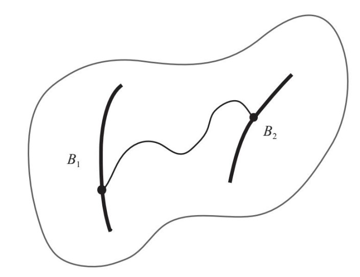
把威滕在普林斯顿的这次发言稍加归纳就会发现，他认为与朗兰兹关系对等的正是这种同调镜像对称。
我们需要注意的是，西格玛模型有两种类型，即“A模型”和“B模型”。我们现在思考的两个西格玛模型事实上并不相同：目标流形为希钦模空间M(X，G)的是A模型，而目标流形为M(X，LG)的是B模型。因此，这两个理论中的膜也分别被称为“A膜”和“B膜”。在镜像对称的条件下，对于M(X，G)上的每一个A膜，在M(X，LG)上都应存在一个B膜，反之亦然。
为了建立几何朗兰兹关系，我们必须把自守层与X在LG中基本群的各种表示联系起来。威滕提出可以利用镜像对称构建这种联系，如下图所示。
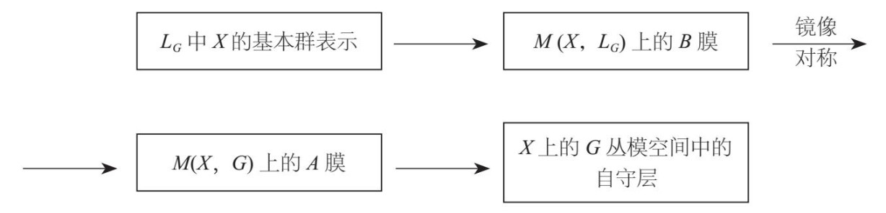
尽管威滕的这个提议有待进一步完善，但他为如何建立电磁对偶性与朗兰兹纲领的联系指出了方向，这已经是一大突破了。一方面，他把数学家们尚未发现的大量新概念（当然与几何朗兰兹纲领没有关系）引入现代数学，包括膜的分类、希钦模空间在朗兰兹纲领中的特殊作用，以及A膜与朗兰兹纲领之间的联系等。另一方面，研究电磁对偶性与朗兰兹纲领之间的联系，有助于物理学家运用数学的理念与深刻见解，去加深对量子物理学的理解。
* * *
在这次会议之后，威滕花了两年时间，与加州理工学院的俄罗斯裔物理学家安东·卡普斯京（Anton Kapustin）共同完善了他的这个提议的相关细节。2006年4月，他们基于对这个领域的研究合写了一篇论文（长达230页），这篇文章受到物理学界与数学界的一致赞誉。它的第一段提及了本书讨论的诸多概念：
数域的朗兰兹纲领统一了数论中大量的经典成果与现代成果，是一个前景广阔的研究领域。朗兰兹纲领为有限域平面上的曲线构建了一个类比对象，有限域平面上的曲线一直是一个非常重要的研究课题。此外，几何朗兰兹纲领对于曲线的研究，无论是具有特征p的有限域平面上的曲线，还是普通的复杂黎曼曲面，都已经取得了显著进展……本文主要研究复杂黎曼曲面的几何朗兰兹纲领，目的是揭示该纲领在量子场论中的重要作用。在开展研究之前，我们假设人们并不熟悉朗兰兹纲领，但是默认大家对超对称规范场论、电磁对偶性、西格玛模型、镜像对称、膜及拓扑场论等学科已经有了一定的了解。本文旨在向大家指出，我们在应用上述学科中大家非常熟悉的知识解决相应的问题时，将会用到朗兰兹纲领。
随后，卡普斯京和威滕在论文的引言部分指出，他们的研究始于我们在普林斯顿高等研究院举行的这次会议（他们还特别提到我的学生戴维·本–兹维在这次会议上的发言）。
在论文的正文部分，卡普斯京和威滕进一步拓展了威滕在普林斯顿会议发言中提出的那些观点，并阐明了A膜与B膜构架、两者之间的镜像对称以及A膜与自守层之间的联系。
为了介绍他们的研究成果，我们先看一个关于镜像对称的简单例子。卡普斯京和威滕研究的是两个希钦模空间及其对应的西格玛模型之间的镜像对称，现在，我们把其中一个模空间替换成一个二维环面。
二维环面可以看成是两个环的乘积，下图中的网线清楚地表明，该环面看上去就像一个串珠项圈：
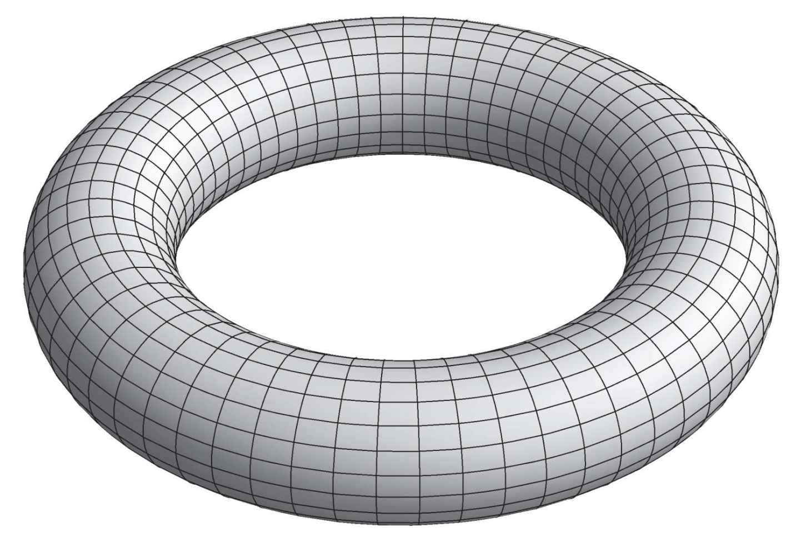
网线中的横向圆环就是一个个“串珠”，我们可以想象在环面中间有一个水平圆环，它就是把串珠串成项圈的链子。在数学家眼中，这个项圈是一个“纤维化结构”，“纤维”是一个个串珠，“基座”是那条链子。也就是说，这个圆环是一个纤维化结构，纤维是一个个圆环，基座也是一个圆环。
我们把基座圆环（链子）的半径记作R1，把纤维圆环（串珠）的半径记作R2。研究表明，该结构的镜像对偶流形也是一个环面，但是该环面是半径分别为1/R1和1/R2的两个圆环的乘积。半径互为倒数的现象，与电磁对偶性中电荷互为倒数的现象非常相似。
这样一来，我们就有两个镜像对偶环面了。我们把其中一个记作T，半径分别为R1和R2，把另一个记作T∨，半径分别为1/R1和R2。注意，如果T的基座圆环很大（即R1很大），T∨的基座圆环就会很小（因为1/R1的值非常小），反之亦然。“大”“小”的交错对应是量子物理学中一种非常常见的对偶关系。
我们研究T上的B膜和T∨上的A膜。不难理解，两者在镜像对称中构成对应关系（有时这种对应关系又被称作“T对偶”，其中T代表环面）。
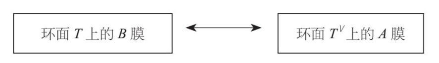
“零膜”（zero-brane）是T上的一种常见的B膜，在环面T上的p点收缩。研究发现，与B膜不同，与之对偶的环面T∨上的A膜则会“附着”在整个环面T∨的上面。这里，我们使用“附着”这个词是有原因的，不过如果对此进行深入解释，就会偏离我们现在关注的内容。实际上，环面T∨上的A膜几乎就是环面T∨本身，只不过A膜大多具备某种结构，即A膜循环群的基本群表示（与第15章讨论的内容相似）。该表示由原点p在环面T上的位置确定，因此，在环面T上的零膜与“附着”在环面T∨上的A膜之间，实际上存在着一一对应关系。
这种现象与信号处理领域广泛使用的傅里叶变换十分相似，如果我们对在某个时间点附近收缩的信号进行傅里叶变换，就会得到类似于波的信号。如下图所示，经过傅里叶变换的信号就像“附着”在表示时间的直线上。
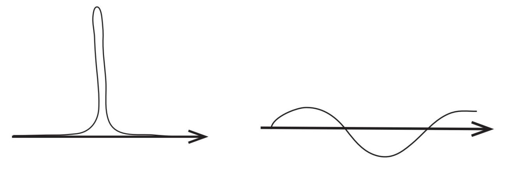
傅里叶变换可以应用于多种类型的信号，我们也可以通过它的逆变换，还原出原始信号。我们还经常要将复杂信号转换成简单信号，因此，傅里叶变换的用途十分广泛。同样，在镜像对称的作用下，一个环面上的复杂的膜对应另一个环面上简单的膜，反之亦然。
研究表明，我们可以用这种环面的镜像对称，去描述两个希钦模空间中的膜之间的镜像对称。此时，我们需要应用这些模空间的一个重要特性（希钦本人描述过该特性），即希钦空间是一个纤维化结构。该纤维化结构的基座是向量空间，纤维则是一个个环面。也就是说，整个希钦空间就是一系列环面，其基座中的每个点都会有一个环面与之对应。在最简单的结构中，基座与圆环纤维都是二维结构，整个纤维化结构如下图所示（注意：基座不同点处的纤维尺寸不同）：
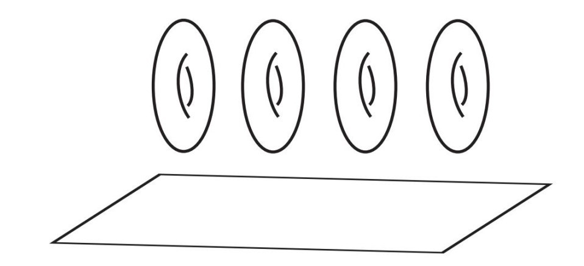
我们可以把希钦纤维化结构视为一盒甜甜圈，只不过甜甜圈与盒底的接触点并没有构成一个点状的网，而且盒底的每个点都与某个甜甜圈有接触。因此，我们必须有无穷多个甜甜圈——有这么多的甜甜圈，霍默·辛普森[1]肯定非常高兴！
研究发现，与朗兰兹对偶群相关的镜像对称希钦模空间也是相同基座上的一个“甜甜圈”（环面纤维化结构）。（“有了油炸圈，还有什么是做不了的呢？”）
这就意味着，在这个基座的每个点上，都存在两个环面纤维：一个是位于A模型一侧的希钦模空间，另一个是位于B模型一侧的希钦模空间。此外，这两个环面按照上述方式彼此构成镜像对称关系（如果其中一个环面的半径是R1和R2，另一个环面的半径就为1/R1和1/R2）。
在通过观察得出这些结论之后，我们就可以借助对偶环面纤维之间的镜像对称，来研究两个对偶希钦模空间的纤维之间的镜像对称。
例如，设p为希钦模空间M(X，LG )中的一个点，我们取在该点收缩的零膜，那么M(X，G)上的镜像对偶A膜是什么呢？
p是环面上的一点，该环面是M(X，LG )在基座点b处的纤维（下图中左侧的环面，位于B模型一侧），其对偶环面（下图中右侧的环面，位于A模型一侧）则是M(X，G)在同一点b处的纤维。我们在M(X，G)上寻找的对偶A膜就是“附着”在该对偶环面上的A膜，与我们从这两个环面的镜像对称中得到的对偶环面相同。
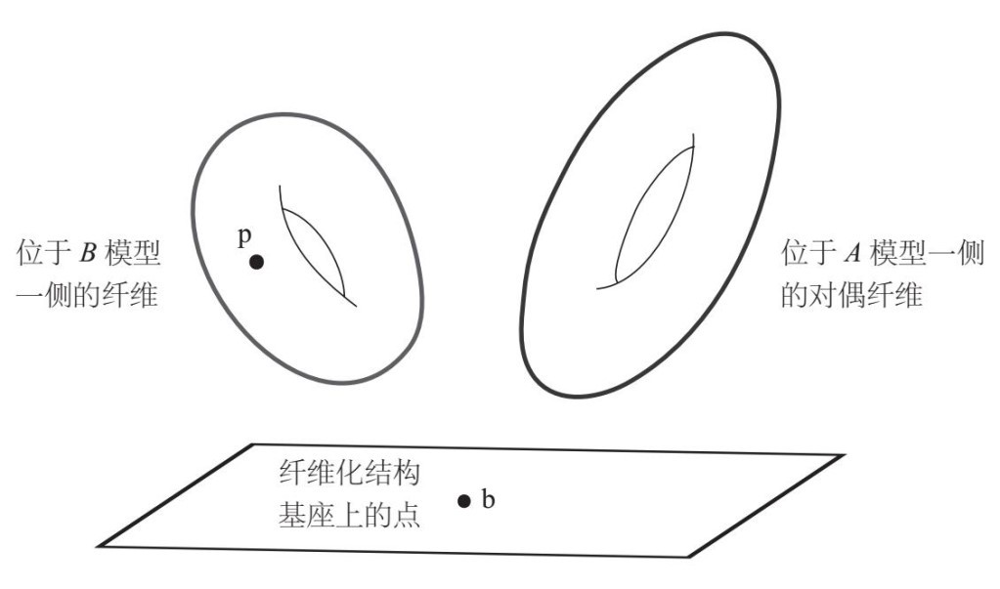
此前，安德鲁·斯特罗明格（Andrew Strominger）、丘成桐和埃里克·让斯罗（Eric Zaslow）等人提出过这种通过对偶环面的纤维化结构，从纤维的角度描述一般情况下的镜像对称的方法。现在，这种方法被称作SYZ猜想或SYZ机制。这种方法的效果十分显著，尽管人们已经十分了解对偶环面的镜像对称，但是一般流形（如希钦模空间）的镜像对称仍然十分神秘。因此，把一般流形的镜像对称简化为环面的镜像对称，可以为我们的研究创造很多便利条件。当然，为了实现这个目的，我们必须把两个镜像对偶流形表示为同一基座上的对偶环面的纤维化结构（同时，这些纤维化结构必须满足某些条件）。幸运的是，在希钦模空间中的确存在这样的纤维化结构，因此，我们可以应用SYZ机制。（环面纤维的维数一般都大于二，但是其整体情况相似。）
现在，我们用镜像对称来构建朗兰兹关系。首先，研究表明，希钦模空间M(X，LG)中的点正好是黎曼曲面X在LG中的基本群表示。我们取在该点收缩的零膜，根据SYZ机制，对偶A膜将“附着”在对偶环面之上（对偶希钦模空间中的纤维则位于基座上相同点的上方）。
卡普斯京与威滕不仅详细地描述了这些A膜，而且解释了如何将它们转变成几何朗兰兹关系的自守层。因此，我们可以通过下图所示流程来实现朗兰兹关系：
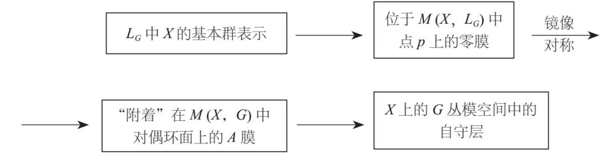
这个关系中出现了一个至关重要的媒介，即A膜。卡普斯京和威滕提出，可以通过两个步骤来构建朗兰兹关系。他们首先利用镜像对称构建A膜，然后在A膜的基础上构建自守层。到目前为止，我们的讨论只涉及了第一个步骤，即镜像对称。与第一个步骤一样，第二个步骤也非常有意思。事实上，正是因为卡普斯京和威滕具有敏锐的洞察力，他们才发现A膜与自守层之间存在这种联系，而在他们提出之前，人们根本不知道其存在。此外，卡普斯京和威滕还提出，在更为普遍的情况下，这种联系依然存在。受到这个令人吃惊的想法的驱动，很多人的数学研究都取得了丰硕的成果。
* * *
我父亲认为，上述这些内容太复杂深奥了。是啊，我们有希钦模空间、镜像对称、A膜、B膜、自守层……这些内容的确会让人晕头转向。事实上，即使是这方面的专家，真能弄清楚这个构架包含的所有内容的人也是凤毛麟角。不过，我并不奢望大家能了解这些概念，而是希望揭示它们之间的逻辑关系，以及让大家了解科学家研究这些概念的创造性过程：他们的动机是什么？他们是如何相互学习、相互交流的？他们的发现对我们理解一些关键性问题有怎样的推动作用？
不过，为了便于大家理解，我们可以借助下表来表示各研究对象之间的类似性。表中包括韦伊“罗塞塔石碑”三个轨道的概念，以及量子物理学领域的研究对象。下表是对第206页“罗塞塔石碑”图的扩展。（我把“罗塞塔石碑”左边与中间的那两个轨道合并在一起，因为这两个轨道中的对象极其相似。）
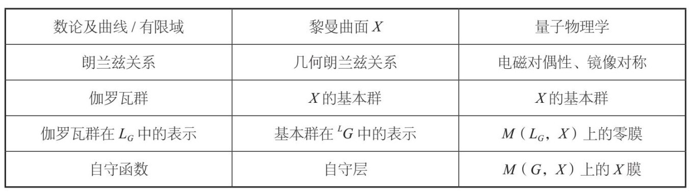
看了上表之后，父亲问我：卡普斯京和威滕是怎么拓展朗兰兹纲领的？这个问题当然具有重要意义。首先，他们在朗兰兹纲领与镜像对称、电磁对偶性之间建立了某种联系，这样一来，我们就可以利用量子物理学在该领域的大量研究成果，进一步拓展朗兰兹纲领。反过来，若朗兰兹纲领的理念被引入到物学领域，又会引导物理学家在电磁对偶性领域提出一些他们以前根本不会想到的问题。这种联系已经创造了一些非常了不起的发现。其次，研究发现，A膜这种数学语言非常适合朗兰兹纲领研究。我们都知道自守层异常复杂，而很多A膜的结构则简单得多。借助A膜这种语言，朗兰兹纲领中某些神秘莫测的难题将会迎刃而解。
下面，我举个具体的例子，来说明这种新语言的应用情况。在这次普林斯顿会议之后，我和威滕展开了一项合作，并于2007年完成。为便于大家理解我们这项合作的内容，我先向大家介绍本书一直在有意无意回避的一个问题。在上述讨论中，我假定两个希钦模空间中的纤维都是我们常见的光滑环面（就像上文图中所示的那些形状规则的环面）。实际上，大多数纤维确实如此，但还有一些纤维有所不同，它们是光滑环面变异后形成的。如果没有这些变异的结构，那么SYZ机制足可以完整地描述两个希钦模空间上膜的镜像对称。但是，当这种变异的环面出现之后，镜像对称性的复杂程度就大大增强了。镜像对称最有趣、但也是最复杂的部分，就是“寄居”在这些变异环面上的膜所产生的镜像对称。
卡普斯京和威滕在他们的论文中只考虑了光滑环面上的镜像对称，因此，变异环面上的镜像对称仍然是一个空白的研究领域。在我和威滕合作完成的论文中，我们解释了最简单的变异环面上的镜像对称。这种环面具有“迹形奇点”（orbifold singularity），如下图所示：
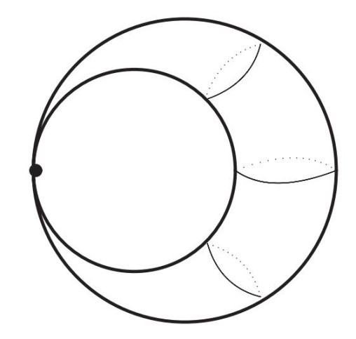
图中这种被压扁的环面实际上就是一种变异的纤维，只不过其中的黎曼曲面X是一个环面，而且LG群是SO(3)群（该结论直接引自我与威滕合写的那篇论文）。在这种情况下，希钦纤维化结构的基座是一个平面。对于该平面上的几乎所有点来说（除了三个特殊点），纤维都是寻常的光滑环面。也就是说，除去这三个点，该希钦纤维化结构就是一组光滑环面（甜甜圈）。不过，在这三个点各自的邻域中，环面纤维（甜甜圈）的“颈部”会塌陷，如下图所示。在该图中，我们沿着基座中的给定路径观察各点上方纤维的情况。
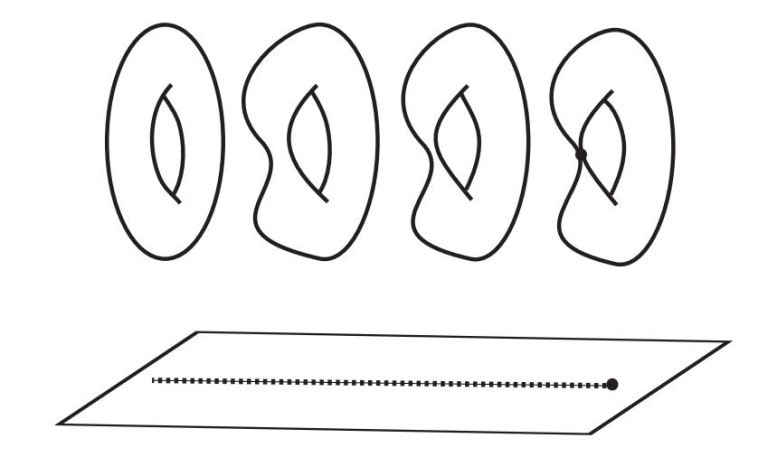
看来，当霍默·辛普森看到盒子里装有无穷多个甜甜圈时，他非常兴奋，结果一不小心踩到盒子上，把一些甜甜圈踩扁了（不过，我们无须为霍默担心，因为盒子里仍然有无穷多个完好无损的甜甜圈）。
我们越靠近基座中被标记出来的那个点（三个特殊点中的一个），纤维环面的颈部就越扁，当到达标记点时，甜甜圈就会塌陷。在上图中，我们从一个不同的角度展示了标记点处的纤维状况。此时，纤维不再是一个环面，而是一个变异环面。
我们需要回答的问题是：希钦模空间中的零膜在变异环面的特殊点（如上图中的标记点，在此处，环面颈部塌陷）处收缩时，环面发生了什么变化？数学家给出的答案是迹形奇点。
研究发现，该点还有一个对称群。在上述例子中，该点的这个对称群与一只蝴蝶的对称群相同。换言之，该群不仅包含恒等元，还有一个与翻转蝴蝶翅膀相对应的元素。这意味着在该点处收缩的不是一个零膜，而是两个不同的零膜。于是，我们的问题就变成：在对偶希钦模空间中的两个A膜是什么？[注意，在这种情况下，G就是SU(2)群，也就是SO(3)群的朗兰兹对偶群。]
我和威滕在论文中指出，在希钦纤维化结构基座中的三个特殊点处，与其构成镜像对偶的变异环面具有如下图所示的特点（该图引自我们合写的论文）：
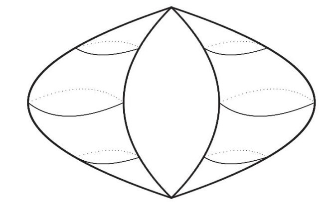
该希钦纤维化结构表现出与前一幅图相似的特点，不过随着我们逐渐靠近基座上的特殊点，环面上有两个地方变得越来越扁，当我们到达该特殊点时，这两个地方都会塌陷。由于环面在两个地方塌陷，因此其对应的变异纤维与前一幅图中的纤维大不相同。该变异环面包含两个部分，数学家称之为“组分”（component）。现在，我们可以回答那个问题了。我们寻找的两个A膜（与在第一个变异环面的迹形奇点处收缩的两个零膜构成镜像对偶），就是“附着”在对偶变异环面的两个组分上的A膜。
这就是一般情况下镜像对称的原型。如果我们把这两个希钦模空间看作同一个基座上的两个纤维化结构，就会发现在这两个结构中都有变异纤维，不过变异机制是不同的。如果在B膜一侧存在一个具有内对称群（如蝴蝶的对称群）的迹形奇点，那么在A膜一侧的纤维就会包含若干组分（如上图中的两个组分）。研究发现，这些组分的个数与在B膜一侧的对称群中元素的个数相同。这个特点可以确保在迹形奇点处收缩的零膜，正好与“附着”在这些不同组分上的A膜相对应。
在我和威滕合作完成的这篇论文中，我们详细地分析了这个现象。令人惊奇的是，我们不仅因此在黎曼曲面的几何朗兰兹纲领这个领域有所发现，而且对韦伊“罗塞塔石碑”中间的轨道（关于有限域平面上的曲线）也有了一些深刻的认识。这个例子充分说明，在某一个领域（量子物理学）中形成的想法与认识，有可能会反过来对朗兰兹纲领的基础内容产生影响。
这种联系的重要作用充分地体现在我们的研究成果之中。现在，我们发现韦伊“罗塞塔石碑”不止三个轨道，还应该加上第四个轨道——量子物理学。当我们在第四个轨道中有新发现时，就会研究其他三个轨道中应该会有哪些类似的发现。这个方法变成我们发掘新想法，获得新认识的源泉。
* * *
我和威滕于2007年4月开始合作这个项目，当时我正在普林斯顿高等研究院访问。这篇论文是在当年的10月31日完成的，正好是万圣节。（这个日子我记得非常清楚，因为那天我在网上提交完论文之后，就去参加一个万圣节的庆祝晚会了。）在这7个月的时间里，我去了研究院三次，每次大约逗留一周时间，在这一周里的每一天，我和威滕都会在他那间布置得很温馨的办公室里埋头钻研。而其余的时间里，我们则各自做研究。我基本上在伯克利与巴黎两地奔波，还在里约热内卢待了两周，走访了那里的一所数学学院。不过，我在哪里并不重要，只要能上网，我和威滕的合作就不会受到影响。在交流最频繁的时候，我们一天就会有十几封邮件往来。我们通过邮件交流对某个问题的思考，或者把论文草稿发送给对方。由于我们的名字相同，因此我们的邮件也形成了某种镜像对称：每封邮件的抬头都是“亲爱的爱德华”，落款则都是“祝好！爱德华”。
由于这次合作，我得以近距离地接触威滕，他的学术能力与职业道德都让我赞叹不已。我记得在选择研究内容时，他投入了大量的时间与精力。在前文中我说过，在这方面需要解决的问题非常多，可能需要花350年才能完全解决，因此，我们必须认真评估某个问题的“性价比”，也就是说不仅要考虑其研究价值，还要考虑在合理时间内取得成功的概率。我觉得威滕的直觉非常准确，判断能力也非常强。一旦确定了研究课题，他就会坚持不懈、埋头钻研，很像汤姆·克鲁斯（Tom Cruise）在电影《借刀杀人》（Collateral）中饰演的那个角色。他在研究中十分讲究方法，而且考虑周详，不会有任何遗漏。当然，和普通人一样，他也经常有困惑的时候。不过，每次他都能找到解决办法。总之，与他的这次合作，在很多方面都对我有所启迪和帮助。
朗兰兹纲领与电磁对偶性的联系迅速成为一个研究热点，并发展成为一个朝气蓬勃的研究领域。在这个发展过程中，我们在圣芭芭拉卡夫里研究所组织的理论物理学年会起到了至关重要的推动作用，该研究所的主任、诺贝尔奖获得者戴维·格罗索（David Gross）给予了大力支持。
2009年6月，我应邀在布尔巴基研讨会上发言，介绍这个领域取得的新进展。该研讨会发起于“二战”结束后不久，是世界上历史最悠久的数学研讨会，在数学界享有盛誉。研讨会成员利用周末时间，每年在巴黎的亨利·彭加莱研究所（Henri Poincare Institute）召开三次会议，每次都有许多数学家踊跃参会。研讨会的创办人是一群年轻而有天赋的数学家，他们杜撰了一个名字，自称“尼古拉·布尔巴基合作者协会”（Association des collaborateurs de Nicolas Bourbaki）。研讨会的理念是，以乔治·康托尔（Georg Cantor）于20世纪末提出的集合论为基础，利用一套严格的新标准改写数学的基础内容。尽管他们未能完全实现自己的目标，但研讨会却在数学家当中产生了巨大的影响。安德烈·韦伊是创办人之一，亚历山大·格罗滕迪克后来也是其中的一个重要人物。
布尔巴基研讨会的目的是报告数学家们所取得的最显著成果。从创办之初，研讨会就设立了一个秘密委员会（按照规定，委员会成员的年龄不得超过50岁），成员们负责挑选会议主题，并确定发言人选。显然，布尔巴基研讨会的创始人认为他们必须不断向活动中注入新鲜血液，这个原则保证了该项活动得以顺利延续。委员会负责邀请发言人，并要求发言人提前写好发言稿，在研讨会召开时分发给参会者。由于在该研讨会上发言是一项荣誉，因此发言人都会遵从这个要求。
我参加的这次研讨会的主题是“规范场论与朗兰兹对偶”。我发言时采用了与本书差不多的语言风格，不过技术性很强，里面包含了很多公式与数学术语。我首先从安德烈·韦伊的“罗塞塔石碑”谈起，跟本书一样，我也简单地介绍了它的三个轨道。韦伊是布尔巴基委员会的成员之一，我觉得在研讨会上讨论他的观点与想法是非常合适的。然后，我重点介绍了最新的研究成果，即如何在朗兰兹纲领与电磁对偶性之间建立联系。
我的发言深受参会者的欢迎。我看到让–皮埃尔·塞尔（Jean-Pierre Serre）坐在第一排，塞尔是布尔巴基委员会的另一个重要成员，也是一个传奇人物，看到他在场，让我感到尤为高兴。我的发言结束后，他走上前来，先是提出了几个尖锐的技术问题，然后对我的发言做了一番评论。
“你把量子物理学看成韦伊‘罗塞塔石碑’的第四个轨道，我觉得这个想法很有意思。”他说，“你知道，安德烈·韦伊本人并不怎么喜欢物理学。不过，如果他今天也来了，我觉得他肯定也会认为量子物理学是‘罗塞塔石碑’的一项重要内容。”
我觉得这是我得到的最好的赞扬。
* * *
近几年来，人们在朗兰兹纲领的研究上取得了许多进展，内容涉及韦伊“罗塞塔石碑”的所有轨道。虽然我们与彻底揭开朗兰兹纲领中的所有谜团这个目标尚有一段距离，但有一点我们可以确定：朗兰兹纲领经受住了时间的考验。现在，我们可以更加清楚地看到，朗兰兹纲领已经引领着我们与数学及物理学中最基本的问题渐行渐近。
近50年前，朗兰兹在写给安德烈·韦伊的信中提出了这些概念与想法；时至今日，其重要性也丝毫没有减弱。我不敢确定，在未来50年里，我们能否解答他提出的所有问题，但朗兰兹纲领无疑会大放异彩。在本书的读者当中，也许就有人会为这个迷人的课题做出贡献。
朗兰兹纲领是本书讨论的重点，它包含意义深奥的概念架构、开创性的洞见、富有诱惑力的猜想、意义深远的定理以及不同领域间令人意想不到的联系，所有这一切都为我们了解现代数学提供了一个全景式的视角。它揭示了数学与物理学之间的微妙联系，让两个学科开展了有双赢效果的对话。此外，朗兰兹纲领还是一个典型范例，展示了我们在第2章讨论的数学理论应当具备的4个特性：普适性、客观性、持久性以及与物理世界的相关性。
当然，数学中还有很多分支领域也有引人入胜的魅力。在这些领域中，有的已经通过相关文献向非专业人士展现了其中的魅力，而有的领域却依然是“藏在深闺人不识”。亨利·戴维·梭罗（Henry David Thoreau）说过：“我们都听说过数学这首美妙的诗歌，但没有多少人为我们吟诵。”150多年过去了，他说的这种情形仍然没有改观。这说明，我们这些从事数学研究的人必须更加努力，向更多的人介绍这门学科的巨大作用以及蕴藏其中的美。与此同时，我希望我对朗兰兹纲领的介绍能激发读者的好奇心，激励他们钻研更多的数学知识。
[1] 霍默·辛普森（Homer Simpson）是美国动画片《辛普森一家》中的一个虚构角色。虽然贪吃、懒惰，还经常惹事，但他偶尔却能展现出自身的才智与价值。——译者注